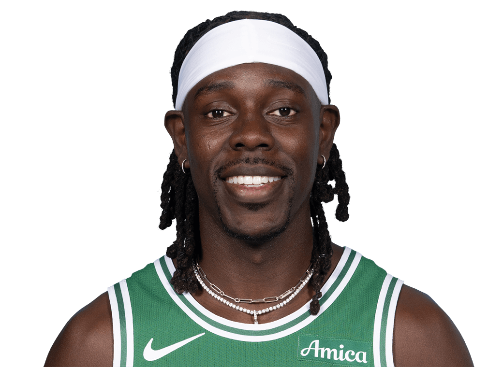

Jrue Holiday
Base-Escolta | #21 | Boston Celtics
Base-Escolta | #21 | Boston Celtics
Universidad de California, Los Ángeles (UCLA)
Jrue Holiday jugó una temporada en los UCLA Bruins, el equipo de baloncesto de la Universidad de California en Los Ángeles. Durante su tiempo allí:
Carrera en la NBA
Jrue Holiday fue seleccionado por los Philadelphia 76ers en el Draft de la NBA de 2009. Durante su carrera en la NBA:
Logros Académicos y Personales
Jrue Holiday no solo se destacó en la cancha, sino también fuera de ella:
Compromiso Social
Jrue Holiday es ampliamente reconocido por su compromiso con la comunidad y su dedicación a causas benéficas:
Familia y Vida Personal
Jrue Holiday ha tenido una familia amorosa y ha sido un modelo a seguir para muchos: